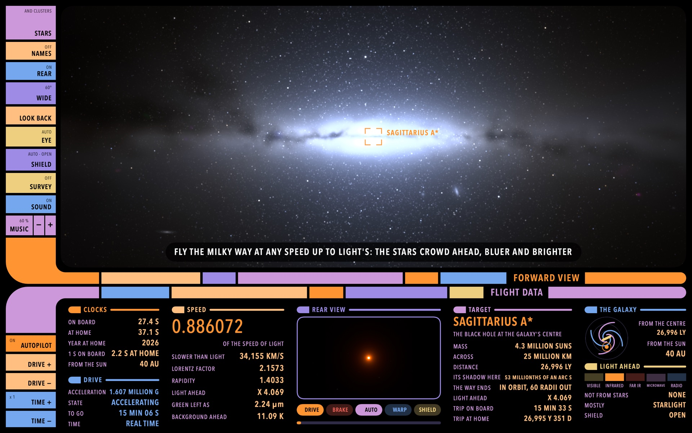
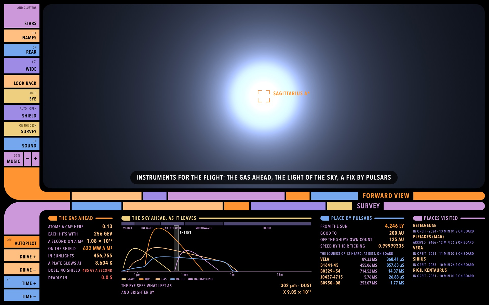

Milky WaySim
Fly the real galaxy at any speed up to light’s. 1.7 million real stars, each where it is — and the sky bent, coloured and squeezed exactly as relativity says it must be.

Every star is where it is
The stars come from the great sky catalogues — Hipparcos, Tycho-2 and ESA’s Gaia — each shown where and as it was when its light left it. The rest of the galaxy, a hundred thousand million stars, its glowing band, its bulge and its dark dust lanes, is worked out from a model of the Milky Way.
Faster, and the sky changes
Set the drive anywhere from 1 g to millions of g. As you speed up, the stars crowd together ahead of you, turn blue and bright, and fade into red behind. Near the speed of light the cold glow of the Big Bang becomes visible in front of the ship, and a shield keeps out the light and the gas you run into.
Two clocks keep the score: ten minutes on board to Alpha Centauri, more than four years for those you left at home.

From the Moon to the edge of the Milky Way
The Solar System
The planets, the Moon, Pluto and the large moons on their real orbits, with maps made from spacecraft pictures. Orbits, falls and fly-bys under real gravity.
The black hole
Sagittarius A* at the centre of the galaxy: its shadow in the glow of the gas falling in, the light of the sky bent round it, and 39 stars on their measured orbits.
Other worlds
2,088 known planets of other stars, such as the seven of TRAPPIST-1. Nobody has seen them, so their looks are a careful guess from their size and heat.
Three looks. Change them here, too.
The instruments are the same in all three; what changes is the colours, the type and how much of the window the sky has. This page changes with them — press 1, 2 or 3.
- An autopilot that takes you anywhere and ends in an orbit
- Readings of speed, Lorentz factor, rapidity, the light ahead and what it left as
- A survey of the gas hitting the shield, the sky’s spectrum, and your place worked out from pulsars
- Time up to a million million times faster, for the slow trips at 1 g
- A short introduction at the first start that shows every control
- Ten pieces of calm music for the long trips, with their own volume
- Saved flights to carry on later, and a log of the places you have reached
- Keyboard and mouse; no account, no ads, no internet needed
Past every planet, then to the centre
Two minutes, recorded from the simulator itself: from beside the Sun past all the planets, then with the drive at 1.6 million g across 27,000 light years to the black hole.
From the simulator, in the look you chose
For the Mac
- Runs on
- macOS 26 or later
- Made for
- Macs with Apple silicon
- Size
- about 135 MB, all data inside
- Version
- 1.0
- Privacy
- collects no data
- Where
- soon on the Mac App Store
The star data are from HYG and AT-HYG by David Nash (CC BY-SA 4.0), ESA’s Gaia mission, NASA and many astronomers; the full credits are in the app. Milky Way Sim is made by one person and is not connected with any space agency.